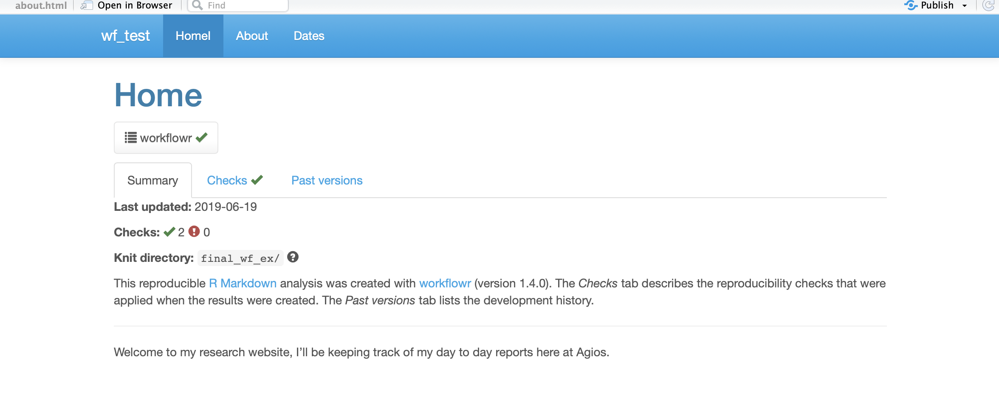
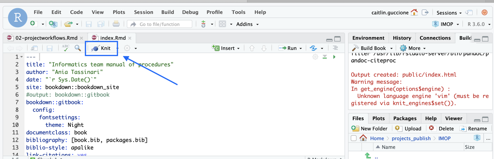
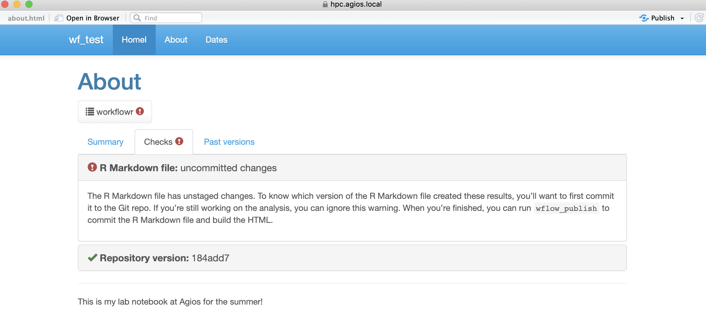
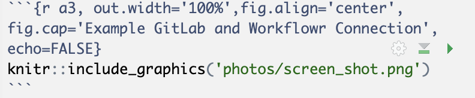

Chapter 3 Project workflows {- 3. #workflows}
3.1 Using Workflowr
3.1.1 Quick Start
This is a quick version of everything listed below, if you want more clear or specific instructions then please skip this section.
3.1.1.1 Set Up
In the Console tab of RStudio in (None) project:
install.packages("workflowr")
library("workflowr")
wflow_git_config(user.name = "First Last", user.email = "first.last@agios.com")3.1.1.2 Creating Projects
In the Console tab,
wflow_start("PROJECT_NAME")
wflow_build()
wflow_publish(c("analysis/*.Rmd"), "Publish the initial files for PROJECT_NAME")3.1.1.3 Connecting to GitLab
In the Console tab,
wflow_use_gitlab(username = "first.last", repository = "PROJECT_NAME", domain = "ceres.agios.com")Go to GitLab and do the following:
- Create a project in GitLab should the same name as the project in RStudio
- We called our project: PROJECT_NAME
- Go back to GitLab and scroll down to the push an existing Git repository option
- Then, copy everything in the box besides the cd line
- Paste what you just copied into the
Terminaltab in RStudio- Make sure you are in PROJECT_NAME directory
3.1.1.4 Creating a New File
In the Console tab,
wflow_open("analysis/NEW_FILE.Rmd")
wflow_build()
wflow_publish(c("analysis/*.Rmd"), "Publish the file NEW_FILE")In the Terminal tab,
git push3.1.1.5 Publish to GitLab without Rebuilding Sites
- Edit the Rmd file and save
- Run one of the following commands (doesn’t matter)
wflow_build()- It doesn’t matter if we build other files, they won’t be added to git unless we add them in the next step
wflow_build("file.rmd")- Knit the file
wflow_git_commit("file.rmd", "This is your commit message")- Flip into the terminal and run
git push()
3.1.2 Installation
3.1.2.1 Programs Needed
We are assuming that you already have RStuido and GitLab, for this implementation we are using the RStudio on the new server (hpc.agios.local) which is version 1.2.1335.1.
If you don’t have GitLab you need to have an account set up through Agios. If you don’t have the updated RStudio you need to get access to the new server and then use the following link : hpc.agios.local
3.1.2.2 Installing Workflowr
- Open RStudio and change project in the top right corner to
(None)- Make sure you are in your home directory on RStudio as well, thus in the bottom right corner of your screen under
New Folder, it is labeledHomewith a small house.
- Make sure you are in your home directory on RStudio as well, thus in the bottom right corner of your screen under
- In the
Consoletab located in the bottom left hand corner :
install.packages("workflowr")- Confirm you have access to Workflowr, in the
Consoletab:
library("workflowr")3.1.2.3 Configure Git
*This only needs to be done once per laptop
In the Console tab:
wflow_git_config(user.name = "First Last", user.email = "first.last@agios.com")3.1.3 Create Project
3.1.3.1 Start Project
In the Console tab:
wflow_start("PROJECT_NAME")- What does
wflow_startdo?- Creates a directory that contains all starting files
- Changes your current directory to PROJECT_NAME
- Starts a Git repo which we will connect to GitLab repository
- What is the
analysisfolder for?- Contains all source R Markdown files (Rmd)
- Includes:
index.rmd- Contains no R code but generates
index.htmlwhich eventually runs the entire project
- Contains no R code but generates
- Includes:
- Contains
_site.yml- Allows user to edit theme, navigation bar, menus ect.
- Helpful link to customizing
- Contains all source R Markdown files (Rmd)
- What is the
docsfolder for?- Contains all HTML files for website
- Note that this file will be empty until we build the project
- Each HTML file is built from a corresponding Rmd file in the analysis folder
- Contains any figures created by Rmd files
- Contains all HTML files for website
- What about the data, code and output files?
- These files are there for your use and thus can be deleted if desired
3.1.3.2 Build Project
In the Console tab:
wflow_build()- What does
wflow_build()do?- Builds all the R Markdown files in analysis and saves their HTML in docs
- Displays the website
Your website should like similar to the image of mine shown below (except with a Publish tab instead of a Dates tab)

3.1.3.3 View Project
At any time you can view the current site on your local machine by typing in the Console tab:
wflow_view()3.1.3.4 Publish Website
Currently, our project is simply an HTML file stored on our laptop, publishing the website will make it available online.
In the Console tab:
wflow_status()This allows you to view which files are published or unpublished currently.
Now we want to publish our page the command to do so takes three parts
- c - Commit
- (“analysis/index.Rmd”, “analysis/about.Rmd”, “analysis/license.Rmd”), - A character vector of the Rmd files you want published
- It may be easier to place ("*.Rmd") here to use all the files
- “Publish the initial files” - A commit message to be posted
Overall, wflow_publish is a quick and error-free way for us to commit and push all of our Rmd files to GitLab at once.
In the Console tab:
wflow_publish(c("analysis/index.Rmd", "analysis/about.Rmd", "analysis/license.Rmd"), "Publish the initial files for PROJECT_NAME")3.1.4 Connecting to GitLab
3.1.4.1 Creating a remote repository on GitLab
- Log in to GitLab and click
New Project - The project name in GitLab should the same name as the project in RStudio: PROJECT_NAME
- Make sure to save it as Internal so everyone at Agios can see it
3.1.4.2 Not working? Do you have an ssh key? **
In order for you to successfully connect to GitLab you need to have an ssh key linked to your GitLab.
There is a simple guide to doing this on GitLab here so you can simply follow along below and click the link if you get lost.
- Automatically copy your public key to the clipboard using one of the following commands:
# macOS:
pbcopy < ~/.ssh/id_ed25519.pub
# WSL / GNU/Linux (requires the xclip package):
xclip -sel clip < ~/.ssh/id_ed25519.pub
#Git Bash on Windows:
cat ~/.ssh/id_ed25519.pub | clip- Go back into your GitLab account and click on
SettingsthenSSH Keysand simply paste and name your key there.
** Only need to do this once per laptop or GitLab account
3.1.4.3 Connect RStudio and GitLab
- Go to RStudio, in
Consoletab:
wflow_use_gitlab(username = "first.last", repository = "PROJECT_NAME", domain = "ceres.agios.com")- Go back to GitLab and scroll down to the
push an existing Git repositoryoption- Copy everything in the box on GitLab besides the first line which
cdinto the repo for the user, there is an example below of what this should look like.
- Copy everything in the box on GitLab besides the first line which
git remote rename origin old-origin
git remote add origin git@ceres.agios.com:Caitlin.Guccione/test-.git
git push -u origin --all
git push -u origin --tags- Go back into RStudio and in the
Terminaltab- Make sure you are in the PROJECT_NAME repo
- Paste the above commands we got from GitLab
- Return to GitLab to ensure your entire project exists there
Figure 3.1: Example GitLab and Workflowr Connection
3.1.5 Adding New Files
3.1.5.1 Creating New Files
Make sure you are inside the PROJECT_NAME project inside RStudio
In Console tab type:
wflow_open("analysis/NEW_FILE.Rmd")- This command creates a new Rmd file and then opens it for your convenience.
If we now want to see the HTML version of our file then we have two options:
- In
Consoletab type:
wflow_build()- You can add specific files to this command or simply leave it empty
- This produces a small view of your website right on RStudio
- Press the `Knit’ button in RStudio as shown below:

- This produces a large web version of your current HTML file
These steps will simply change the HTML file local bu tin order to make this public and add it to GitLab we need to update our changes.
3.1.5.2 Update your Changes
- Check the status to see what needs to be updated, in the
Consoletab,
wflow_status()This can also be done by looking at the red checks on the workflowr section of your live page as shown below:

- Make the appropriate HTML files public and updated, in the
Consoletab,
wflow_publish(c("analysis/index.Rmd", "analysis/NEW_FILE.Rmd"), "Add my first file")- This is the same format found on the
Publish Websitetab of this page and so you can customize it in the same way
There is one exception to this and it’s when you want to make updates to the _site.yml file found in the analysis folder. This file controls the style on the top of every page of your website. In this case, you want to update all HTML files even though their Rmd files aren’t changed.
In that case, use this,
wflow_publish("analysis/_site.yml", "Change the theme", republish = TRUE)- Push the final changes to GitLab
As we did previously in the Publish Website, in the Terminal tab,
git push3.1.5.3 Adding Workflowr to New File
If you want the normal workflowr setup which is found on all the other pages, then replace the — part of the file with the following code:
---
title: "Home"
site: workflowr::wflow_site
output:
workflowr::wflow_html:
toc: false
editor_options:
chunk_output_type: console
---3.1.6 Styling the Webpage
3.1.6.1 Helpful Links
If you already have an idea of what you would like to change, below are a few very helpful resources filled with information:
- This resource is a great place to start because it has all basics of Rmd syntax and I used it as a cheat sheet along the way.
- This is an entire book all about Rmd and how to use it. I found it rather lengthy but very helpful.
- If something isn’t quite working right you may have run into a workflowr issue in which cause their FAQ’s page is helpful.
3.1.6.2 Changing the Theme
Changing the theme modifies the overall appearance of the webpage is a quick and easy way to spice up the page.
- Go into your
analysis/_site.ymlfile - Underneath
ouputaddtheme = ceruleanas shown below:- The cerulean theme matches Agios colors
output:
theme: cerulean- Choose your theme
- The following themes are available : “default”, “cerulean”, “journal”, “flatly”, “darkly”, “readable”, “spacelab”, “united”, “cosmo”, “lumen”, “paper”, “sandstone”, “simplex”, “yeti”
- You can view how they look here: Themes
- Preview your theme using,
wflow_build()- Update your website by running,
- This will rebuild every HTML file even if their corresponding Rmd file hasn’t been updated
wflow_publish("analysis/_site.yml", "Change the theme", republish = TRUE)The following website will also walk you through changing the theme: Themes Overview
3.1.6.3 Adding Photos
Although this may seem like a simple task, it is a bit challenging since we are using Workflowr
- Create a
photosfolder inside thedocsfolder and add your photo there:
dir.create("docs/photos")- Include the following command wherever you want your graphic to appear:

- View the images on the webpage
wflow_build()- Add to GitLab
- We need to push the actual photo to GitLab using
wflow_git_commitand then we can usewflow_publishto automatically push the rest of the files to GitLab
- We need to push the actual photo to GitLab using
wflow_git_commit("docs/assets/external.png", "Add external image of ...")
wflow_publish()3.2 Set Up Workflow and Executing
3.2.1 Create a folder for your newproject
Come up with a project stucture you like and stick with it.
3.2.1.1 Copy from a previously created template folder
Use cp -r project_template newproject, where project_template has structure:

3.2.1.2 Use a bash script
Call ./setup_project.sh newproject, where setup_project.sh is:
#!/bin/bash
NEW=$1
## Set up folder structure
mkdir $NEW
cd $NEW
touch README
mkdir data
mkdir data/raw
mkdir data/raw/pheno
mkdir data/interim
mkdir data/processed
mkdir data/processed/pheno
touch data/raw/MAKE_EVERY_FILE_READ_ONLY
mkdir results
mkdir results/reports
mkdir results/notebooks
mkdir results/figures
mkdir sub
mkdir sub/logs
mkdir sub/qsub
mkdir src
touch src/functions.R
Don’t forget!
- Fill project README
- Adapt structure to project needs
- Exclude data and other large files from git using .gitignore (see next section)
- Make files in data/raw read-only with chmod -w
3.2.2 Set up a repository for your code on Agios’ secure GitLab
Create a new project at http://ceres.agios.com (Mark P. can help)
3.2.3 Set up a repository for your code locally and link to GitLab
In your newproject folder on command line execute (modify user name):
git init
git add .
git commit -am 'initial commit'
git remote add origin git@ceres.agios.com:User.Name/newproject.git
git push -u origin master
3.2.4 Set up an R project in RStudio
Choose Existing Directory (newproject)


3.2.5 Analysis in R and RStudio
Data:
- Raw data:
- If accessed from the web, include url, description, and date accessed in README
- Processed:
- Processed data should be named so it is easy to see which script generated the data
- Can add file descriptions to
filename.READMEand place processing script in the same directory as data (works well for preprocessing steps, like alignments, etc)
- Can add file descriptions to
- Processed data should be tidy
- Processed data should be named so it is easy to see which script generated the data
Code:
- Place (almost) all intermediate scripts in
newproject/src/ - Any chunks of code frequently reused in the analysis should be converted into functions, saved in
newproject/src/functions.R, and sourced in scripts, notebooks and reports.
- Use Google’s R Style Guide or The tidyverse styleguide to format your code and make it easier to read (if need be run code through formatR)
Figures:
- Exploratory:
- Don’t have to be pretty
- Can be embedded in report / notebook
- Final:
- Should be polished and saved in
newproject/results/figures/
- Should be polished and saved in
Scripts:
- Raw:
- May be less commented (but comments help you!)
- May be multiple versions
- May include analyses that are later discarded
- Final:
- Clearly commented
- Small comments liberally - what, when, why, how
- Bigger commented blocks for whole sections
- Include processing details
- Only analyses that appear in the final write-up
Notebooks and reports:
R markdown files can be used to generate reproducible reports
Text and R code are integrated
- Notebooks:
- intermediate
- may use one per day or one per subanalysis
- documents all atempts
- Reports:
- final methods and results only
- good for sharing
Adapted from: Reproducible Research at Coursera
3.2.6 Version control in git and GitLab
Adopt a branching workflow appropriate for the project and team size, and stick to it.
Reprinted from: Git workflow for small teams. Link currently is password protected.
git and git-workflow resources:
Learn git
Git branching model
GitFlow
3.2.7 Keeping track of enviroment
Use devtools::session_info()
> devtools::session_info()
Session info -----------------------------------------------------------------------------------------------------------------
setting value
version R version 3.4.2 (2017-09-28)
system x86_64, linux-gnu
ui RStudio (99.9.9)
language (EN)
collate en_US.UTF-8
tz America/New_York
date 2018-05-02
Packages ---------------------------------------------------------------------------------------------------------------------
package * version date source
backports 1.1.1 2017-09-25 CRAN (R 3.4.2)
base * 3.4.2 2017-10-05 local
compiler 3.4.2 2017-10-05 local
[...]
or sessionInfo()
> sessionInfo()
R version 3.4.2 (2017-09-28)
Platform: x86_64-pc-linux-gnu (64-bit)
Running under: Ubuntu precise (12.04.4 LTS)
Matrix products: default
BLAS: /data2/software/R/3.4.2/lib/R/lib/libRblas.so
LAPACK: /data2/software/R/3.4.2/lib/R/lib/libRlapack.so
locale:
[1] LC_CTYPE=en_US.UTF-8 LC_NUMERIC=C LC_TIME=en_US.UTF-8 LC_COLLATE=en_US.UTF-8 LC_MONETARY=en_US.UTF-8 LC_MESSAGES=en_US.UTF-8 LC_PAPER=en_US.UTF-8 LC_NAME=C
[9] LC_ADDRESS=C LC_TELEPHONE=C LC_MEASUREMENT=en_US.UTF-8 LC_IDENTIFICATION=C
attached base packages:
[1] stats graphics grDevices utils datasets methods base
loaded via a namespace (and not attached):
[1] Rcpp_0.12.13 digest_0.6.12 withr_2.0.0 rprojroot_1.2 backports_1.1.1 magrittr_1.5 evaluate_0.10.1 stringi_1.1.5 rstudioapi_0.7 rmarkdown_1.6 devtools_1.13.3 tools_3.4.2 stringr_1.2.0 yaml_2.1.14 compiler_3.4.2
[16] memoise_1.1.0 htmltools_0.3.6 knitr_1.17
or docker with rrtools